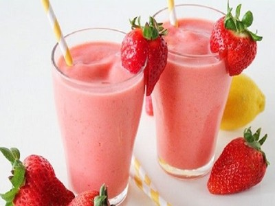

|  |
Smoothie name: Strawberry smoothie▸ Ingredients:
▸ Time to prepare: 15 minutes ▸ Approx quantity: 1 medium-size cup |
▸ How to make smoothies :
- Strawberries remove the knob, wash, take to soak with diluted salt water, leave for about 15 minutes, then take out to dry, then cut the strawberries in half.
- Then put the strawberries in the blender, add yogurt, fresh milk, a teaspoon of condensed milk, sugar, small ice and puree it, pour it into a glass to drink like
that you have a cup of strawberry smoothie delicious, nutritious.
▸ Calories and related information: